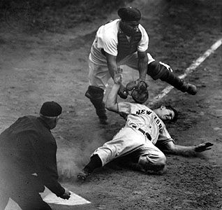

The history of baseball can be broken down into various aspects: by era, by locale, by organizational-type, game evolution, as well as by political and cultural influence. The game evolved from older bat-and-ball games already being played in England by the mid-18th century. This game was brought by immigrants to North America, where the modern version developed. By the late 19th century, baseball was widely recognized as the national sport of the United States. Baseball is popular in North America and parts of Central and South America, the Caribbean, and East Asia, particularly in Japan, South Korea, and Taiwan. References to baseball date back to the 1700s when in England it was referenced in 1744 in the children's book A Little Pretty Pocket-Book by John Newberry, though he was actually referring to the game "rounders". In the early 1800s "baseball" and a game first mentioned in 1828 as the aforementioned "rounders" may have been the same or very similar. During the 1830s and 1840s organized amateur club baseball grew up in eastern United States cities, and the rules innovations made by New York City clubs became the basis for the modern game, far removed from its English ancestor. These clubs formed a national governing body with uniform rules in 1858, the National Association of Base Ball Players. In 1871 the first professional league, the National Association of Professional Base Ball Players, was founded. Five years later, the National League was created; it was followed by the American League in 1901. The first World Series between the champions of the two major leagues was held in 1903, and by 1905 it became an annual event. Baseball early in the 20th century was characterized by low-scoring games, but the dead-ball era ended in the early 1920s with rule changes and the rise of power hitter Babe Ruth. The major leagues had a color barrier that lasted until 1947, when Jackie Robinson made his debut. The major leagues began the process of expansion in 1961 and attendance increased from the mid-1970s to 1994, when a work stoppage led to the cancellation of the World Series. Professional baseball leagues featured teams from Canada as early as 1877, and the sport spread to numerous countries in the 1800s and 1900s. It was played in the Olympics as a medal sport from 1992 to 2008. Other competitions between national teams include the Baseball World Cup and the World Baseball Classic, which was first held in 2006.
One popular theory is that Baseball is loosely based on the game rounders, another bat and ball game, which is popular in England and Ireland. Rounders had been played in both countries for centuries, with the GAA in Ireland first creating formal rules for the game in 1884. It's thought that baseball might have been a regional variant on the same game at first. This game, called bass-ball, was first recorded as being played in Surrey, England in 1749, with a special guest (the Prince of Wales) in attendance as one of the players. It's thought that this game was perhaps first brought to Canada by English immigrants, or possibly to the United States by Irish immigrants.
Now that the Knickerbocker Rules were firmly established, the game became more and more popular in the USA. By 1857, the National Association of Base Ball Players, the first league, had been set up. From there more and more leagues were created, with many being formed and later closing. In 1903, the World Series officially began, following previous agreements between leagues to play games at the end of each season to determine a winning team. The World Series, combined with more and more teams springing up across the United States, lead to the game, already known as the American "national pastime" growing in popularity across the country. It's not just Americans who love the game, though - it also has teams and devoted fans in Canada, Cuba, Mexico, Australia, Japan, England, Puerto Rico and more.
Reports of versions of rounders or baseball, without officially agreed rules, being played in North America begin in the 1830s. In 1838, the first officially recorded game took place in North America, in the Canadian province of Ontario. By 1845, a set of official rules for the game, called the Knickerbocker Rules, had been agreed by the Knickerbocker Base Ball Club, a group based in New York City who took their rules, such as "All disputes and differences relative to the game, to be decided by the Umpire, from which there is no appeal" very seriously. With these rules in place and plenty of time for practice, by 1846 the New York Knickerbockers were ready to compete in the USA's first recorded baseball game. Unfortunately, they lost to the New York Nine with a rather brutal end result of 23 to 1.
Although most fans of baseball will have a particular favourite team, there are some players that have been so successful historically that they have won fans from around the world. Here are just a few of those baseball superstars (and some lovely nicknames to boot):
Babe Ruth is possibly the most well-known baseball player of all time. Babe's real name was George Herman Ruth Jr., and he played a whopping 22 seasons, beginning in 1914 and ending in 1935. What Babe is particularly remembered for is his skills as an outfielder, meaning a defensive player whose job was to catch the ball after it had been hit to stop a player from the opposing team from scoring a run. Although Babe's career took off as a pitcher for the Boston Red Sox, it was during his time playing for the New York Yankees that he really came to be recognised. He was one of the first 5 players to be added to the Baseball Hall of Fame in 1939.
Scoring an amazing 101 home runs in his career, it's not surprising that Honus' nickname was 'The Flying Dutchman'. He spent the majority of his Major League Baseball career playing for the Pittsburgh Pirates, beginning in 1897 and finishing in 1917. An interesting fact about Honus is that a baseball card of him, the T206, which was on sale from 1909 to 1911 is one of the most valuable cards in the world. Copies of it have been traded for as much as 6.6 million dollars, so you'll have to have plenty of change in your piggy bank if you'd like to get your hands on one!